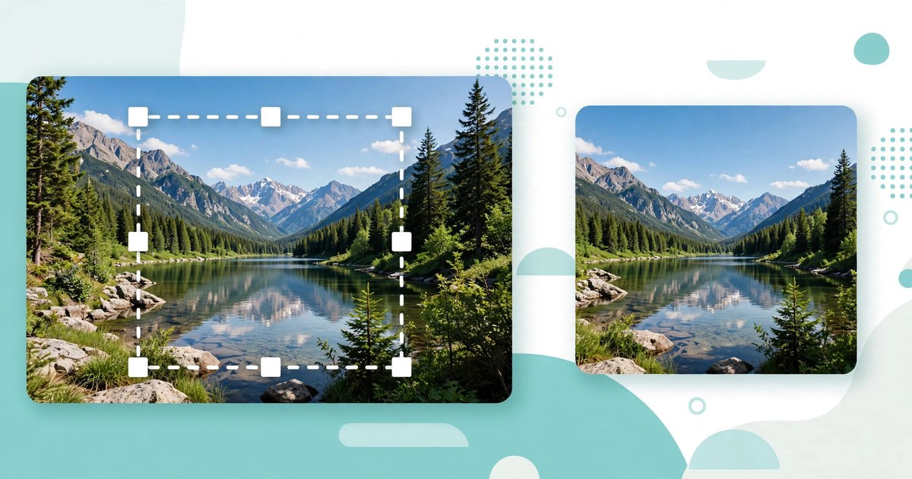

How to Crop an Image Online
Cut out the distracting edges, frame the subject properly, and get the exact shape you need — in seconds, without installing anything.
October 31, 2026 · 6 min read

Almost every photo needs a small trim before it is ready to share: a stranger at the edge of the frame, too much empty sky above the subject, or a screenshot that includes half the desktop. Cropping fixes all three in seconds — and it is one of the few edits that genuinely improves a photo rather than just changing it.
The catch is that a bad crop is worse than no crop. Cut too tight and you lose a hand, a rooftop, or the context that made the photo interesting. Cut to the wrong shape and the platform stretches or trims it again for you. This guide shows you how to crop an image online properly: what the tool does, the exact steps, how the pixel maths works, and the mistakes that ruin otherwise good photos.
What the Image Cropper does
The Image Cropper lets you select a rectangular part of a photo and download just that part. You upload one image, drag on the preview to draw your crop rectangle, and click Crop. The selection is rendered at the image's full resolution — so a crop from a large photo stays a large, sharp file, not a small thumbnail — and the result downloads as a PNG.
You can crop freely to any rectangle, or lock the shape with an aspect-ratio preset: Free, 1:1 (square), 4:3, or 16:9. A preset locks the ratio, so as you drag, the rectangle keeps that shape and only its size changes. That matters because most platforms expect a particular shape: a square for a profile photo, a wide rectangle for a banner, and the classic 4:3 shape for a standard photo. The tool runs entirely in your browser, so your image never leaves your device.
One honest limit: the cropper has no zoom or rotate control, and no width or height fields. It crops what you draw, at full resolution, and nothing else. So if a photo is tilted, straighten it elsewhere first, then crop here.
Crop an image in 5 steps
- Open the Image Cropper and upload your image with the "Upload an image" control.
- Choose an aspect ratio. Leave it on Free if you want any rectangle, or pick 1:1 for a square, 4:3 for a standard photo shape, or 16:9 for a wide banner. A preset locks the ratio while you drag.
- Drag on the preview to draw your crop rectangle. Leave a little breathing room around the subject. If the rectangle is wrong, use Reset selection and draw it again.
- Click Crop. The tool renders your selection at the image's full resolution, and the result appears in the result area.
- Download the cropped PNG. Check the result first: confirm nothing important was cut off at the edges, then save it and use it wherever you need it.
A worked example: the pixel maths of three common crops
Take a photo that is 4,000 pixels wide and 3,000 pixels tall — a standard 4:3 photo. What happens when you crop it to each preset?
- Square (1:1): a square can be no taller than the photo, so the largest possible square is 3,000 × 3,000 pixels. Centred, it trims (4,000 − 3,000) ÷ 2 = 500 pixels from each side.
- Wide (16:9): a 16:9 rectangle 3,000 pixels tall would need to be 3,000 × 16 ÷ 9 = 5,333 pixels wide — wider than the photo. So the width limits the crop: 4,000 pixels wide gives a height of 4,000 × 9 ÷ 16 = 2,250 pixels, a 4,000 × 2,250 crop.
- Standard (4:3): the photo is already 4:3 (4,000 ÷ 3,000 = 1.333), so a full-frame 4:3 crop changes nothing. From a 3,600 × 2,400 photo instead, a 4:3 crop keeping the full height is 2,400 × 4 ÷ 3 = 3,200 pixels wide — a 3,200 × 2,400 crop.
The pattern is worth remembering: the crop is always limited by the shorter side of the shape you want. A wide crop from a tall photo loses height; a square crop from a wide photo loses width. And cropping never adds pixels — so crop from the largest original you have, not from a copy that has already been shrunk.
Which shape to choose
- 1:1 (square): profile photos, avatars, and square posts. The safest choice when you do not know where the image will appear, because a square is rarely re-cropped badly.
- 4:3: standard photos, slides, and documents — a natural photo shape without the dramatic width of a banner.
- 16:9: banners, headers, video thumbnails, and widescreen slides. A square photo in a banner slot gets its top and bottom cut off by the platform instead.
- Free: anything with an unusual shape — a receipt, a tall screenshot, or a detail you want to isolate — and any off-centre subject a preset would force empty space around.
If you are unsure, crop wider than you think you need — you can crop again, but you can never recover discarded pixels.
5 mistakes that ruin a crop
- Cropping from a small copy. A photo already shrunk for messaging apps has few pixels to spare. Crop the original camera file, and keep the cropped result as a separate file so the original stays intact.
- Cutting through joints and edges. Cropping through a person's ankles, wrists, or the top of their head looks like an accident. Frame just inside or just outside those points — never exactly through them.
- Removing all context. A landmark with no surroundings is just a texture. Keep enough background to say where the photo was taken, unless the detail itself is the subject.
- Letting the platform crop for you. Uploading a wide photo as a profile picture means the platform picks the square itself — usually the centre, which may not be your subject. Crop to the platform's shape yourself first.
- Forgetting the file grows no larger. A tiny crop from a big photo — say a face from a group shot — will look soft when enlarged, because it contains few pixels. Expect it to look fine small on screen but blurry printed large.
Frequently asked questions
Does cropping reduce image quality?
No — cropping only removes pixels outside your rectangle; the pixels inside are kept at full resolution. Quality drops only if you then enlarge the small crop beyond its size.
What shape should I crop a profile photo to?
Square, 1:1. Profile slots are square or circular, and a square crop keeps your subject centred in the circle.
Can I crop to an exact pixel size?
Not with this tool — there are no width or height fields. Crop to the right shape here, then use the Image Resizer to set the exact dimensions.
Is my photo uploaded anywhere when I crop online?
Not with this tool. Everything runs in your browser, and the page states that your image never leaves your device.
What if I crop the wrong area?
Use Reset selection, draw the rectangle again, and click Crop once more. Your original file is never changed, so a mistake costs seconds.
Related tools: Image Cropper · Image Resizer · Image Compressor · Image Format Converter · Image to PDF